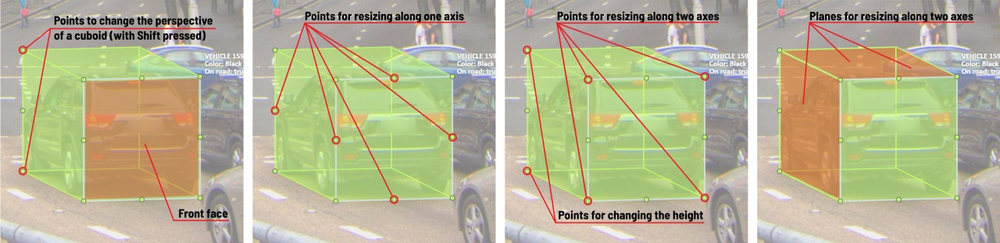

It is used to annotate 3 dimensional objects such as cars, boxes, etc… Currently the feature supports one point perspective and has the constraint where the vertical edges are exactly parallel to the sides.
This is the multi-page printable view of this section. Click here to print.
Annotation with cuboids
Guide to creating and editing cuboids.
1 - Creating the cuboid
Before you start, you have to make sure that Cuboid is selected and choose a drawing method ”from rectangle” or “by 4 points”.

Drawing cuboid by 4 points
Choose a drawing method “by 4 points” and click Shape to enter the drawing mode. There are many ways to draw a cuboid. You can draw the cuboid by placing 4 points, after that the drawing will be completed automatically. The first 3 points determine the plane of the cuboid while the last point determines the depth of that plane. For the first 3 points, it is recommended to only draw the 2 closest side faces, as well as the top and bottom face.
A few examples:

Drawing cuboid from rectangle
Choose a drawing method “from rectangle” and click Shape to enter the drawing mode. When you draw using the rectangle method, you must select the frontal plane of the object using the bounding box. The depth and perspective of the resulting cuboid can be edited.
Example:

2 - Editing the cuboid

The cuboid can be edited in multiple ways: by dragging points, by dragging certain faces or by dragging planes. First notice that there is a face that is painted with gray lines only, let us call it the front face.
You can move the cuboid by simply dragging the shape behind the front face. The cuboid can be extended by dragging on the point in the middle of the edges. The cuboid can also be extended up and down by dragging the point at the vertices.

To draw with perspective effects it should be assumed that the front face is the closest to the camera.
To begin simply drag the points on the vertices that are not on the gray/front face while holding Shift.
The cuboid can then be edited as usual.

If you wish to reset perspective effects, you may right click on the cuboid,
and select Reset perspective to return to a regular cuboid.

The location of the gray face can be swapped with the adjacent visible side face.
You can do it by right clicking on the cuboid and selecting Switch perspective orientation.
Note that this will also reset the perspective effects.

Certain faces of the cuboid can also be edited, these faces are: the left, right and dorsal faces, relative to the gray face. Simply drag the faces to move them independently from the rest of the cuboid.

You can also use cuboids in track mode, similar to rectangles in track mode (basics and advanced) or Track mode with polygons